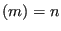

*GAP CONDUCTANCE
Keyword type: model definition, surface interaction
This option allows for the definition of the conductance across a contact pair. The conductance is the ratio of the heat flow across the contact location and the temperature difference between the corresponding slave and master surface (unit: [energy]/([time]*[area]*[temperature])). The gap conductance is a property of the nonlinear contact spring elements generated during contact. This means that heat flow will only take place at those slave nodes, at which a contact spring element was generated. Whether or not a contact spring element is generated depends on the pressure-overclosure relationship on the *SURFACE BEHAVIOR card.
- for node-to-face contact:
- if the pressure-overclosure relationship is linear or tabular a contact spring element is generated if the gap clearance does not exceed , where A is the representative area at the slave node, or
 if this area is zero (can happen for 2-dimensional elements). Default for
if this area is zero (can happen for 2-dimensional elements). Default for  is
is  , its value can be changed for a linear pressure-overclosure relationship.
, its value can be changed for a linear pressure-overclosure relationship. - if the pressure-overclosure relationship is exponential a contact spring area is generated if the gap clearance does not exceed (cf. *SURFACE BEHAVIOR).
- for face-to-face contact:
- if the pressure-overclosure relationship is tied a contact spring element is generated no matter the size of the clearance
- else a contact spring element is generated if the clearance is non-positive.
The conductance coefficient can be defined as a function of the contact pressure and the mean temperature of slave and master surface. Alternatively, the conductance can be coded by the user in the user subroutine gapcon.f, cf Section 8.4.11. In the latter case the option USER must be used on the *GAP CONDUCTANCE card.
First line:
- *GAP CONDUCTANCE
- Enter the parameter USER if appropriate
Following sets of lines define the conductance coefficients in the absence of the USER parameter: First line in the first set:
- Conductance.
- Contact pressure.
- Temperature.
Use as many lines in the first set as needed to define the conductance versus pressure curve for this temperature. Use as many sets as needed to define complete temperature dependence.
Example:
*GAP CONDUCTANCE
100.,,273.
defines a conductance coefficient with value  for all contact pressures and all temperatures.
for all contact pressures and all temperatures.
Example files: .